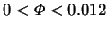

The two types of velocity boundary conditions are those at solid and semipermeable walls.
At a solid wall, no fluid (gas or vapour) can pass through the boundary,
therefore
At an ideally semipermeable mass transfer interface, the vapour
alone can pass; i.e. the surface is impermeable to the gas. In this case, the normal
component of the total mass flux must equal that of the
vapour mass flux (2.4):
The no-slip condition is uncontroversial for the semipermeable walls, except for situations like the experiments of Hu and El-Wakil (1974; §3.3.2) or Weaver and Viskanta (1991c; §3.3.14), where liquefied vapour streamed down the walls. For the solid walls, however, there is a deep division of opinion on the validity of the no-slip condition, dating back at least to 1954 (Lee, C. Y. & Wilke), and continuing up to the present (§3.2).
Though the issue may have been obscured by several simultaneous phenomena, I am persuaded by the agreement between experiment and model (including nonslip solid walls) in the recent detailed study of Rosenberger et al. (1997), and so accept the validity of the boundary condition. Another test of the no-slip condition could be provided by the agreement between theory, numerical solutions and experiment on the criterion for the onset of convective flow in a Stefan diffusion tube with a light vapour (McBain, Suehrcke & Harris, in press; §3.2.5), although to date measurements are only available for very low mass transfer rates ( ).
Further verification, in the form of a more specific experiment or `a rigorous statistical mechanical treatment', as suggested by Markham and Rosenberger (1980) and Jhaveri et al. (1981), may be required before this question is finally settled.